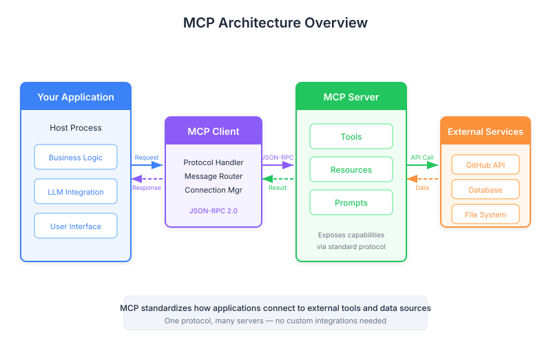

| Item | Detail |
|---|---|
| Exam Domain | D2 — Tool Design & MCP Integration (18%) |
| Task Statements | T2.1 Design and implement tool schemas; T2.3 Configure MCP server connections |
| Source | introduction-to-model-context-protocol / 01-mcp-basics / Lesson 03 |
MCP is a standardized communication layer that lets Claude access external tools and data through dedicated MCP servers, eliminating the need to hand-write integration code.

Model Context Protocol (MCP) is a communication protocol that sits between your application and external services. Rather than writing bespoke tool schemas and API integration code for every service Claude needs to access, MCP delegates that responsibility to specialized MCP servers.
The core architecture follows a simple pattern:
Your Application (MCP Client)
|
v
MCP Server (e.g., GitHub MCP Server)
|
v
External Service (e.g., GitHub API)
Each MCP server exposes a standardized interface containing tools, prompts, and resources. Your application only needs to know how to speak MCP — the server handles all service-specific details.
Key Insight
MCP is to AI tool integration what USB is to hardware peripherals. Instead of a custom connector for every device, you get one standardized protocol that everything plugs into.
Consider building a chat interface where users ask Claude about their GitHub data. A user asks: "What open pull requests are there across all my repositories?"
Without MCP, you would need to:
# WITHOUT MCP: You write and maintain all of this
tools = [
{
"name": "get_pull_requests",
"description": "List open PRs across repositories",
"input_schema": {
"type": "object",
"properties": {
"state": {"type": "string", "enum": ["open", "closed", "all"]},
"repo": {"type": "string"}
}
}
},
# ... dozens more tool definitions
]
def handle_get_pull_requests(state, repo):
# Authentication, pagination, error handling...
response = requests.get(f"https://api.github.com/repos/{repo}/pulls",
params={"state": state},
headers={"Authorization": f"token {token}"})
# ... more code
With MCP, the GitHub MCP server provides all of this out of the box. Your code simply connects to the MCP server and passes tool calls through.
Key Insight
The maintenance burden is the real killer. GitHub alone has hundreds of API endpoints. Without MCP, every API change potentially breaks your tool definitions. MCP servers centralize that maintenance.
The MCP Client is your application — the system that connects to MCP servers on behalf of Claude. It handles:
ListToolsRequestCallToolRequestThe MCP Server is a standalone process that wraps an external service. It:
Anyone can author an MCP server. In practice:
This is a common exam topic. MCP and tool use are complementary, not identical:
| Concept | What It Does |
|---|---|
| Tool Use | The mechanism by which Claude decides to call a tool, formats the input, and processes the result |
| MCP | The protocol that provides tool definitions and execution infrastructure to Claude |
Think of it this way: tool use is the verb (Claude calling a tool), while MCP is the noun (the system that supplies and runs those tools).
Without MCP, you still have tool use — you just have to write all the tool definitions yourself. Without tool use, MCP servers are useless — there is no mechanism for Claude to invoke them.
Key Insight
On the CCA exam, do not conflate MCP with tool use. MCP is about who defines and maintains tools. Tool use is about how Claude invokes them. They work together but are distinct concepts.
This lesson maps directly to Domain 2: Tool Design & MCP Integration (18%). Key exam angles:
| Front | Back |
|---|---|
| What is the primary problem MCP solves? | It eliminates the need to manually write, test, and maintain tool schemas and integration code for every external service Claude needs to access. |
| What three types of capabilities can an MCP server expose? | Tools, prompts, and resources. |
| How does MCP relate to tool use? | They are complementary: MCP provides tool definitions and execution infrastructure; tool use is the mechanism by which Claude invokes those tools. |
| Who can author MCP servers? | Anyone — service providers, community contributors, or individual developers building custom integrations. |
| What is the role of the MCP Client? | The MCP Client is your application that connects to MCP servers, discovers available tools, and routes tool execution requests. |
| In the MCP architecture, where does tool execution actually happen? | On the MCP server, not on your application server. The MCP server handles all service-specific implementation details. |
| Why is MCP compared to USB? | Like USB standardizes hardware connections with one protocol, MCP standardizes AI tool integrations so you do not need a custom connector for every service. |
| What would you need to implement yourself WITHOUT MCP for a GitHub integration? | Tool schemas for every operation, handler functions for API calls, authentication handling, pagination, rate limiting, and ongoing maintenance for API changes. |